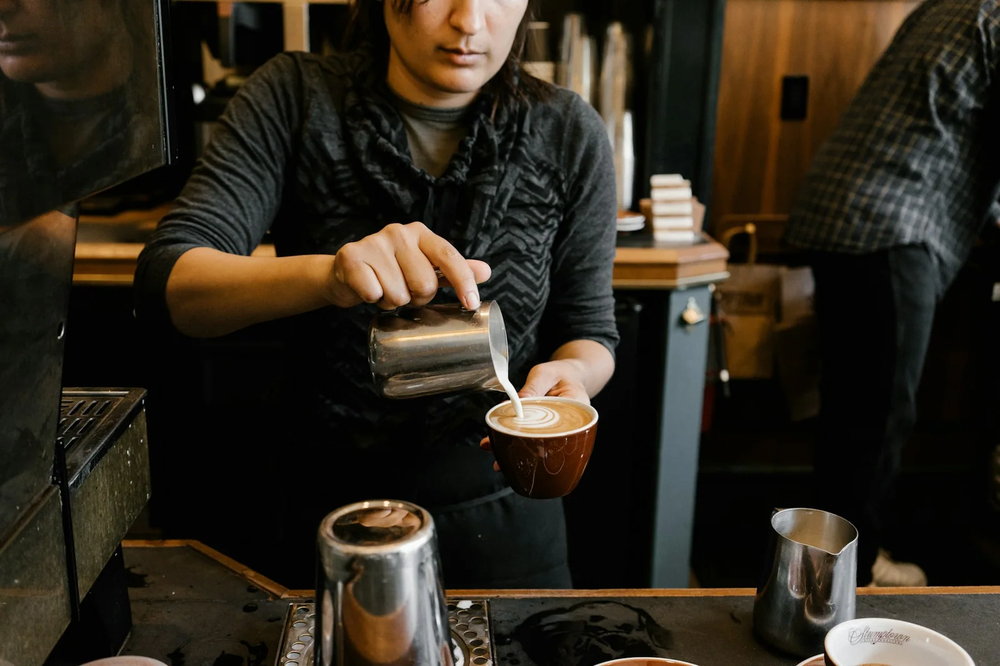
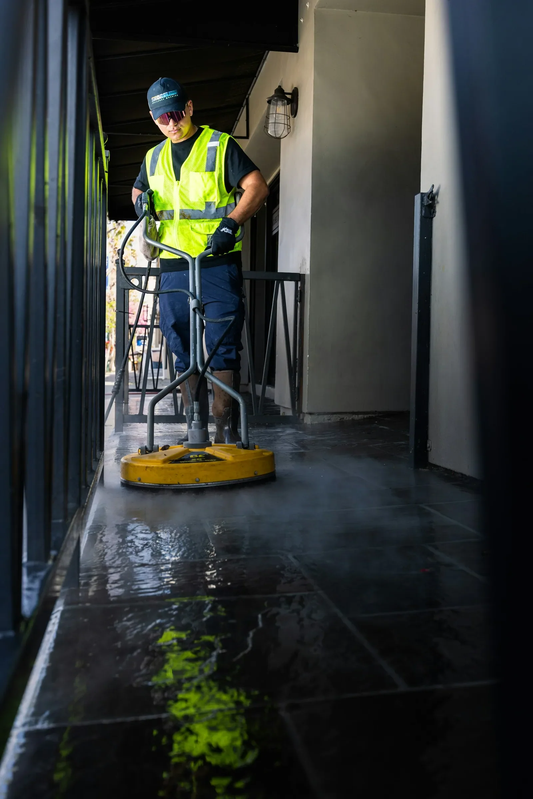
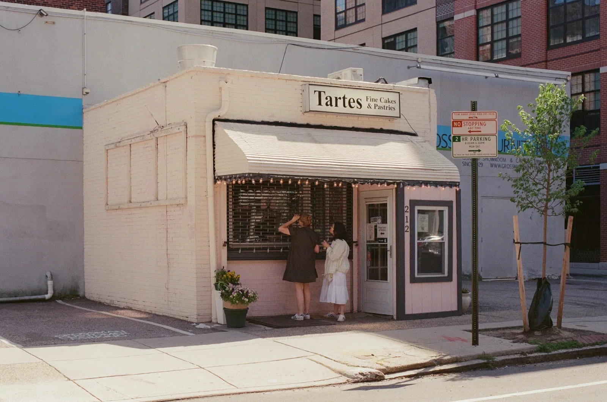

Need better content, a clearer customer journey, local services, or a working system? Define the problem first. We review what can actually be delivered.
Describe the project
THE NITERUN NETWORK/BUILT FOR THE REAL WORLD
MAKEITreal.
01 / FOR BUSINESSES
Bring the problem. We’ll help you find a practical next step—from content and services to software and execution.
Talk about your projectEDITORIAL PHOTOGRAPHY / FOR DESIGN REFERENCE, NOT NITERUN CLIENT WORK
THE IDEA / 001NOT ANOTHER STATIC COMPANY
01
THE WORLD DOESN’T NEED MORE PITCHES. IT NEEDS MORE DONE.
NITERUN connects the things that normally live apart: people looking for meaningful work, businesses with real problems, and software built to close the gap.
A NETWORK BUILT AROUND EXECUTIONNOT INFLATED PROMISES.
THE NETWORK / 002CHOOSE THE DIRECTION
WHAT WE CONNECT
Different starting points.
One way forward.
Start with your actual goal. Each pathway leads to an existing NITERUN initiative or a conversation about what’s possible—not a promise that every opportunity is funded or available today.
FIG. 01 — PEOPLE DOING THE WORK / EDITORIAL IMAGE
CHAPTER 01 / LEARNING
NITEACADEMY / PRACTICAL LEARNING
LEARN
THE WORK.
DO THE WORK.
Learning paths, exercises and a space to build real capability. A place to develop what you can do—not just collect courses.
ACADEMY PLATFORM IN DEVELOPMENT · DOMAIN ACTIVATION IN PROGRESSNITERUN SERVICES / PHYSICAL WORK
REAL PLACES.
REAL NEEDS.
REAL FOLLOW-THROUGH.
Cleaning, detailing, exterior washing and seasonal projects. One clear request process, with actual scope and provider availability confirmed before booking.
Explore service requests
CHAPTER 02 / SERVICESTHE STANDARD / 003OBSERVATION → OUTCOME
NO THEATER. NO INVENTED RESULTS.
BEYOND THE
GOOD IDEA.
A functioning website is a beginning. Real business value is what happens after someone uses it.
01 / OBSERVE
Understand what’s actually happening.
02 / BUILD
Put a useful solution into the world.
03 / VERIFY
Check delivery, acceptance and payment.
04 / IMPROVE
Use evidence to make the next version better.
